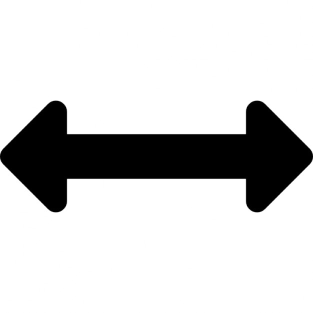
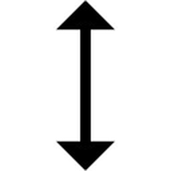
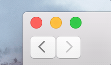
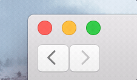
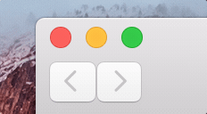
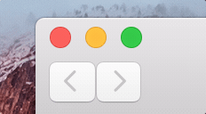

Typical Appearance
A resize event is characterized by a change in an element's dimensions.
In contrast with zoom, which is a related feature, resize changes the dimensional properties (length and width) of the element itself, rather than the scope at which the element is displayed on a screen. Examples of commonly resized elements include windows, icons, images, and text. However, for the purposes of evaluating typical appearances and behavior, we will consider the resize behavior of windows.
The arrow mouse cursor and resize buttons are the most common interface elements for changing the dimensions of elements.
Arrow Mouse Cursor
Diagonal
Horizontal
Vertical
Resize Button

Typical Behavior
There are two categories of window resize behavior: manual and automatic.
Manual
The dimensions of a window can be manually resized by a drag and drop operation using the arrow resize cursor. Entering manual resize mode is visually represented by a change in the mouse cursor icon's apprearance from a pointer to an arrow. The orientation of the arrow, indicates the direction of resize, whether horizontal, veritical or diagonal.Once in the resize stage, the perimeter of the window can be manipulated.
Events
hovermouse downmouse release
The mouse event of hovering over the perimeter of a window changes the cursor to an arrow which indicates the allowed direction of resize. When the cursor is an arrow, the user is in the resize state.
A mouse down event, once in the resize state, begins manual resize. While in mouse down, changes in the position of the mouse will manipulate the dimension of the window. The dimension change is visually rendered in real time.
Upon arriving at the desired dimension in mouse down, mouse release will set the window dimension and exit the resize state.
Automatic
Automatic resize, is independent of a user-defined end dimension. Resize to full screen causes the window to fill the entire screen. Typically this is trigged by clicking a button, which toggles from full screen to non-full screen.
Events
hoverclick
Hovering over a window button menu reveals symbols that indicate the different options for automatic resize
On click the window is resized to fit the entire window.
State Diagram

A resizeable element is in the standby state prior to resize. Once the mouse starts dragging the edge or corner, the window enters the resizing state. Once finished, the window reaches the resized state.
Component in Action
The following gifs represent only the resize functions within the Mac OSX platform that are common across different platforms (with minor stylistic differences). A closer look of resize in the OSX platform is explored in the "Platform-Specific Instances" section below.
 

Manual Resize
This is an example of manually resizing a window. Upon hovering over the perimeter of the window, the mouse cursor changes into a resize cursor, which indicates the direction of resize possible. Manual resize is permitted within the boundaries set by the platform, which default to the screen size. Overrides to the default max size on the macOSX platform are that the window can only be resized up to the menu bar at the top and up to the dock at the left.
 

Automatic Resize
This is an example of automatically resizing a window. Hovering over the menu buttons to the left of the window reveals symbols that define the resize options possible. When in default (non-fullscreen mode), upon clicking the green button, the window will resize to fill the dimensions of the screen. When in fullscreen mode, upon clicking the same button, the window will resize to its size prior to being in fullscreen.
Variants
The interface behaviors of resize can vary, depending on the element that is being resized
- Slider Resize can be accomplished by a slider.
- No resize Resize can be accomplished by a slider.
- Form Fill-In Most commonly for resizing text to a certain font point.
- Resize Text Resize text...
- Split Screen
A function of the resize buttons is to allow for a full screen tiling of two windows to maximize the screen space use. In split screen mode, users can manually resize the windows by shifting the separation bar between the two windows. An in depth discussion of this interaction style is found here.
Priority Metrics
Ben Shneiderman, in his book Designing the User Interace defines learnability, efficiency, errors, memorability, and satisfaction, as metrics by which the usability of a system can be measured. Resize is a common interface component, and in a perfect system, all five metrics are important. Nevertheless, if the resize function as a user interface component is evaluated against these metrics, learnability and efficiency rise as the most important, whereas memorability, errors, and satisfaction are less important.
Learnability
EFFICIENCY
ERRORS
MEMORABILITY
SATISFACTION
Resize is a critical and commonly used aspect of any GUI-based operating system. When evaluating this interaction component against Ben Shneiderman's five usability metrics outlined in his book Designing the User Interace, the most important metrics for resize are learnability, efficiency, errors, while less important are: memorability and satisfaction. Since it is a critical aspect of any GUI based operating system, most of the priority metrics are vital in this component's design analysis. Users who intend to resize a window must have no confusion as to how to accomplish the task. In the physical world, the natural way of unfolding or unrolling a piece of paper is to pull from either the sides or the corners. Resizing follows this natural way of thinking by allowing the user to increase or decrease the size from the corners and sides of the window, making the process simple to learn. Also, since resizing follows the natural mental model, the way in which the user resizes windows is easily memorable.
Since window resizing corresponds to either mouse input or window menu input, the response is immediate. Since window resizing is easily learnable and highly memorable, it is unlikely that users commit errors when attempting the task.
Due to its simplicity and utilitarian nature, resizing does very little in the way of providing satisfaction to the user. However, this does not detract from the overall good design of window resizing.
Key Characteristics
Direct Manipulation Interaction Style
Direct manipulation is an interaction style in which the changes that a user makes to an object are incrementable, reversible, and immediately represented on the screen. Manual resize is a classic example of direct manipulation. When a user resizes an element's dimensions manually, the impact of the change is visible immediately and continually on the user's screen. Thus, key characteristics of effective manual resize will be discussed in the context its classification as a direct manipulation implementation. Well implemented direct manipulation allows the user to achieve mastery of the interface, competence in performing tasks, and enjoyment in using the interface. The following principles and guidelines are relevant for informing best practices for resize interfaces.
- Principle of Feedback
- Principle of Transparency
- Mental Model
Feedback is a defining interaction design principle of effective direct manipulation. Feedback in manual resize is characterized by a change in element's size on the screen in real time, as the user is resizing. Feedback time must be sufficiently fast, as any latency in the response will cause a delay in the user action - visual response feedback loop.
In effective direct manipulation, the interaction tool itself becomes transparent to the user. As a direct manipulation interface, resize "tools" disappear as the user interaction with the element being resized through the mouse cursor is understood as an extension of a user's tactile functions, emphasizing the "direct"-ness of direct manipulation.
Overall, effective interaction design must allow for the user's mental model derived from the system image to correspond with the designer's mental model. Assisting this process in manual resize is the parallels that digital direct manipulation has with how users interact with the physical world. Physically resizing a moldable substance, such as clay or elastic is mirrored in the "grasping" mouse down and "stretching" resize state of a window or element on a screen.
Platform Specific Instances
macOS Human Interface Guidelines
In this section, the resize component implmentation in the Mac OSX platform will be specifically evaulated. Specific examples of resize implementations will be provided, as well as a discussion of how Apple's interaction design principles have influenced these specific resize implmentations. "macOS Human Interface Guidelines" is a document that provides insight into the theories, principles, and guidelines that Apple Developers use to design the macOS interface. One guideline that it states specifically for resize, is that standard document windows should have transient resize controls--controls that disappear when not needed. The interface guidelines also considers the principle of direct manipulation as a way of affirming the user's mental model of a task, because it can feel more natural than what they define as "explicit tasks."

Automatic Resize
This example shows automatic resize in the Notes Application Window. Hovering over the colored buttons reveals the resize symbol, and upon click of the green fullscreen button, the window fills the entire screen. The fullscreen symbol is indicative of the function it triggers, because of the arrows that are pointing outwards. In fullscreen mode, the entire menu disappears, reflecting the macOS guideline of transient controls. When the user wants to return to a non-fullscreen mode, the resize button is accessed by displaying the menu bar, which returns to the screen when the mouse is at the top of the screen. Hovering over the button reveals the resize symbol, which is now arrows that are pointing inward, indicating that the window is now going to shrink.

Manual Resize
This example shows manual resize in the Note Application Window. Hovering over the permeter of the window changes the mouse cursor from a pointer to an arrow, which is indicative of the direction of resize possible at that position. Drag and drop explores different dimensions, befre setting the new dimension on mouse release. An interesting characteristic to notice is that resizing the Notes window will cause text wrap to occur, bounded by the dimensions of the Notes Windodw. Also, notice how resize causes the menu bar to add/drop components on stretch/shrink, respectibly. Resize is just one component in a network of components whose interconnectedness causes resize to change more than just the size of the window. In this case, as a consequence of the resize, the menu bar automatically formats to accomodate for the size of the window.
Dock Resize
Direct manipulation occurs at a higher level of abstraction in this example of a slider that accomplishes resizing the dock and its icons by means of a resize slider. The user is manipulating the position of the slider to control the size of the dock. Although the user is a acting on an element that is then acting on the dock, this is still direct manipulation because the impact of the resize action is immediately visable via the size of the dock on the screen.

System Preferences
Some windows don't have resize properties, because the contents within the windows are static and cannot be changed. The fact that the OSX System Preferences window cannot resize is conveyed by the observation that on hover, the resize arrow cursor and the resize button did not respond. This observation signal mental models of the interaction design
Text Resize
...
{kind=link}
{kind=link}
{kind=link}
{kind=link}